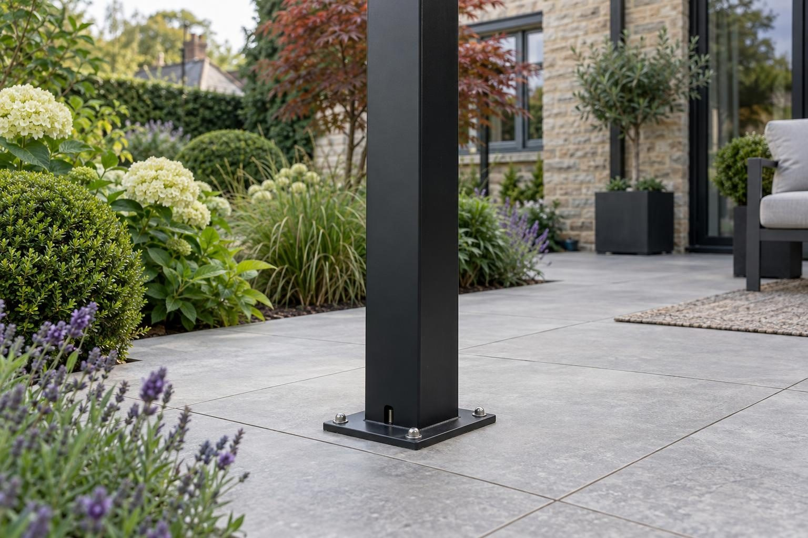

Louvred pergolas in Empingham
Louvred pergolas in Empingham, placed to frame the views towards Rutland Water and open country that many gardens here enjoy.
In Empingham, a louvred aluminium pergola starts from £4,500 supplied and fitted, for a 3m × 4m frame on a suitable existing base, with larger frames, side screens and new bases priced after the visit. The main local consideration is where to put it: plots are often generous with a view worth framing, and ground near the North Brook stays wet.
- Supplied and fitted
- From £4,500 (3m × 4m)
- Planning
- Usually permitted development behind the house
- Ground
- Limestone; wetter near the North Brook
- Guarantee
- 5 years, in writing
Our 2026 guide prices. Your fixed price comes in writing after the site visit. Full breakdown: louvred pergolas cost guide.
Louvred pergolas in Empingham
Garden projects in Empingham often have Rutland Water or open country as their backdrop, and that changes how we think about a pergola. Because the frame is freestanding, it does not need to sit against the house. On a generous plot it can stand further down the garden, facing the view, with the louvres opened for sun and closed when a shower comes across the water. The frame is powder-coated aluminium, and rain from the closed roof runs into gutters inside it and down the posts.
Where the view matters, open sides or glass walls with sliding doors keep it in sight while still giving shelter, and the built-in warm-white LED lighting lets the space work into the evening. Frames run from 3m × 3m up to 8m × 3m. Siting a pergola away from the house usually means new concrete pads or a patio to stand on, which we price after seeing the garden, along with the drainage for the posts.
What makes Empingham different
Empingham is on the limestone side of Rutland, and much of the village drains reasonably well, which makes a soakaway for the roof water a realistic option on many plots. The North Brook is the exception: it runs through the village on its way to the Gwash, and ground near it stays wet. Gardens sloping towards the brook need the soakaway tested first. In the conservation area, a pergola cannot sit between the side of the house and the boundary.
A typical Empingham job is a larger pergola, perhaps 6m × 3m, set on new pads or a patio part-way down a long garden behind a stone house, with glass walls or open sides facing the view and LED lighting for evenings. Smaller frames over existing patios suit the later houses on the village edges.
Sources: Rutland conservation areas · Rutland flood risk strategy.
Permissions in Empingham
- PlanningA freestanding pergola in a rear garden is normally permitted development if it stays behind the front of the house, is no more than 2.5m high at the eaves and 2.5m overall within 2m of a boundary, does not sit on a platform more than 30cm high, and together with any sheds or other outbuildings covers no more than half the garden. A listed house needs planning permission for one. In a conservation area it also cannot go between the side of the house and the boundary. Planning Portal: outbuildings
- TreesTrees in a conservation area need six weeks' notice before work, and protected trees need consent; both are free. Rutland County Council: tree works
- Design and priceWe measure up, check the ground and the planning position, and give you one fixed written price.
Rules checked October 2026.
What you get in Empingham
- Sited to frame views across generous plots
- Glass walls keep the outlook while giving shelter
- Ground near the North Brook tested before drainage
- Powder-coated aluminium frame that will not rot, warp or need painting
- Louvred roof that opens for air and light and closes against rain, draining down through the posts
- Warm-white LED lighting in the frame, with motorised louvres as an option
The specification
- Survey of the base, levels, boundaries and planning position
- Existing patio checked; concrete pads or a new patio where it is not up to it
- Frame set out square and level, posts fixed with stainless anchors
- Roof water taken to a drain, soakaway or border, not across the patio
- Low-voltage power put in and certified by a registered electrician where needed
- Five year workmanship guarantee in writing on the base and installation; the frame carries the manufacturer's guarantee

Rated 5.0 from 37 Google reviews
“Had my garden done by the lads at Rutland driveways and landscaping I’m very pleased with the outcome also I booked to get my sisters driveway repaired by the guys would 100% recommend.”
Connor, Corby · Porcelain patio — Google review
“Lewis transformed my garden from a muddy bog and but in drainage and a Beautiful porcelain patio. All the tradesmen worked hard and were very conscientious. Couldn't recommend more!!!!”
Peter · Garden drainage and porcelain patio — Google review
Everything else we do here


Louvred pergolas in Empingham: questions
What does a louvred pergola cost in Empingham?
Is planning permission needed in Empingham?
Can the pergola stand down the garden rather than against the house?
Will glass walls block the view of the water?
Louvred pergolas nearby
Request a site visit in Empingham
We measure up, check levels and drainage, and send a written proposal with the build-up, the programme and one whole price. No pressure and no follow-up sales calls.